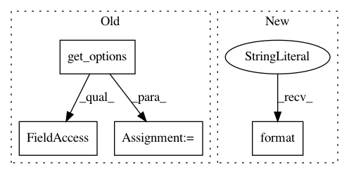

05d7240153788a0d35c514ac9942a8a87ed6e1ef,contrib/jax_ws/src/python/pants/contrib/jax_ws/tasks/jax_ws_gen.py,JaxWsGen,execute_codegen,#JaxWsGen#Any#Any#,48
Before Change
args = self._format_args_for_relative_path(target, target_workdir, url)
result = self.runjava(
classpath=classpath,
main="com.sun.tools.internal.ws.WsImport",
jvm_options=self.get_options().jvm_options,
args=args,
workunit_name="wsimport")
if result != 0:
raise TaskError("JAX-WS compiler exited non-zero ({0})".format(result))
def _format_args_for_relative_path(self, target, target_workdir, url):
After Change
stderr=workunit.output("stderr")).wait()
workunit.set_outcome(WorkUnit.FAILURE if return_code else WorkUnit.SUCCESS)
if return_code:
raise TaskError("wsimport exited non-zero {rc}".format(rc=return_code))
def _build_wsimport_cmd(self, target, target_workdir, url):
distribution = DistributionLocator.cached(jdk=True)
In pattern: SUPERPATTERN
Frequency: 3
Non-data size: 4
Instances
Project Name: pantsbuild/pants
Commit Name: 05d7240153788a0d35c514ac9942a8a87ed6e1ef
Time: 2017-11-08
Author: cheister@gmail.com
File Name: contrib/jax_ws/src/python/pants/contrib/jax_ws/tasks/jax_ws_gen.py
Class Name: JaxWsGen
Method Name: execute_codegen
Project Name: pantsbuild/pants
Commit Name: e6fca77674554e516cfb358d1b395986acd3f7e7
Time: 2016-05-02
Author: john.sirois@gmail.com
File Name: src/python/pants/java/distribution/distribution.py
Class Name: DistributionLocator
Method Name: cached
Project Name: pantsbuild/pants
Commit Name: 8aa92e2294f757f44c7241be0d7efc9326839c88
Time: 2015-03-18
Author: nhoward@twopensource.com
File Name: src/python/pants/backend/jvm/tasks/jar_publish.py
Class Name: JarPublish
Method Name: execute